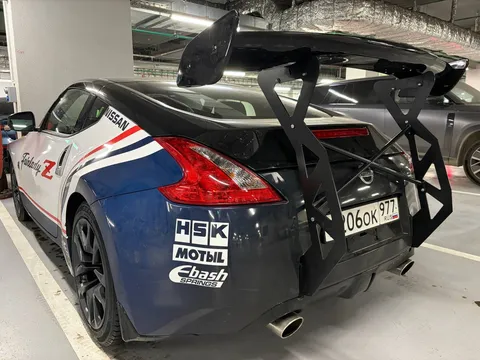
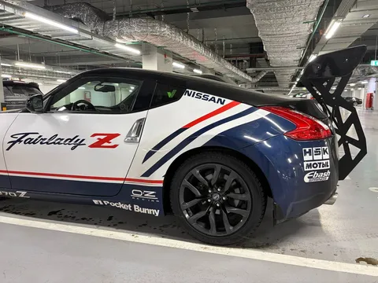
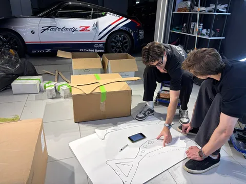
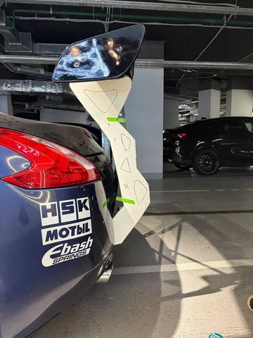
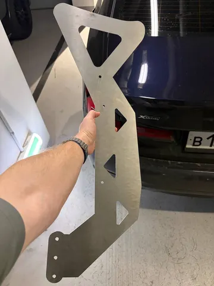
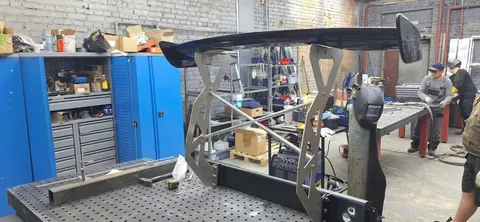

Не прошло и 3 месяцев с появления спойлера V1.0, как появился V2.0. Фото не самые удачные, да и машина грязная, но как такое скрывать от вас? Спойлер: будет еще спойлер V2.1. С ним и сделаем нормальную фотосессию, stay tuned.
В первой версии мне не понравились пропорции (спойлер на курьих ножках) и лишняя округлость конструкции. Хотелось чего-то жирнее и злее. Поэтому мы снова пустились в прототипирование, макетирование, сканирование, чпу и все прочие этапы, некоторые из которых есть на бекстейдж-фото. Что изменилось кроме дизайна: поменяли диапазон регулировок угла атаки крыла, усилили кронштейны консоли к стойкам для снижения воблинга, перенесли распорки выше, чтобы не закрывали грз, увеличили вылет от усилителя, сдвинули консоль вперед относительно габарита, и еще по мелочи. А про дальнейшие изменения расскажу в следующих сериях.
Тем временем, пришли зима. Долго думал, ездить ли зимой на зетке. Решил ездить. Во-первых, она только сейчас приобрела желаемый облик, жалко ее прикопать до весны, хочется кайфовать. Во-вторых, я считаю вредным для машины полугодовой простой, машина должна ездить. Поэтому и сейчас хотя бы разок в неделю ее выгуливаю.
Для этого пришлось, очевидно, купить зимнюю резину. Впрочем, толку от этого оказалось немного. Думал, раз уж выкатываться зимой буду редко, не стану раскошеливаться на хорошую резину и возьму вестлейк. Короче, вестлейк - полная шляпа, зацепа 0. Не берите на повседнев. А я зимой на зетке, видимо, езжу исключительно крадучись, просто чтобы зарядить аккум, прогнать жидкости, прогреть агрегаты, размять резинки и, что уж греха таить, половить лайки от соседей по потоку и парковке.





